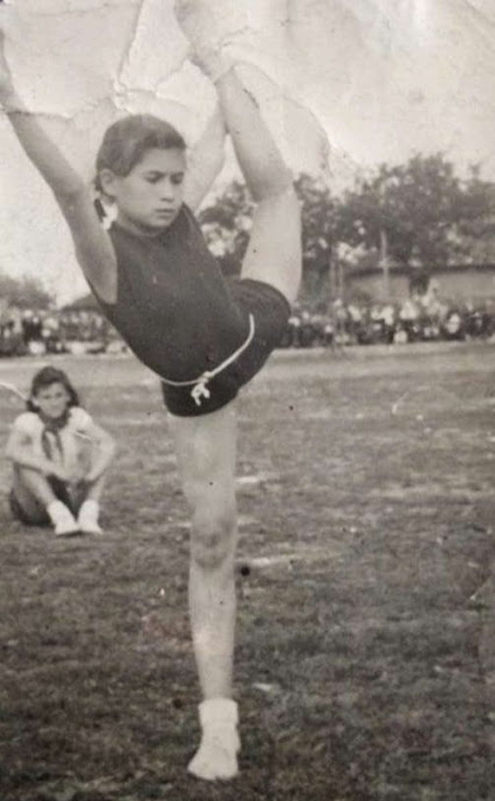

Детство и училищни години
Лили Иванова е родена на 24 април1939г.в гр. Кубрат. Тя е кръстена на починалата си по-голяма сестра Лиляна. В кръщелното свидетелство е записана като Лиляна Иванова Петрова.

Родители на Лили Иванова са Мария Петрова Дамянова и Иван Петров Дамянов (р. 1904 г.). Майка й е от с. Тетово, до Кубрат. Баща й е чиновник в полицията и кметството в периода преди 9 септември 1944г., което става причина впоследствие да бъде арестуван за повече от 3 месеца. По време на Втората световна война започва да се занимава с отдаване на автомобили под наем, а след това става шофьор. Майка й по принцип не е работила, но при финансови трудности е ставала сервитьорка. Семейството има четири деца, всички от които са момичета, две от тях умират от скарлатина.
Родът на Лили Иванова по бащина линия се нарича Чокоите. Прабаба й и прадядо й са заможни българи, отглеждащи и търгуващи с коне, които първоначално живеят на територията на днешна Румъния, в Северна Добруджа. Впоследствие се преместват в русенското село Нисово. Баба й и дядо й са Мария и Петър. След брака си те заживяват в Кубрат, като ги наричали „нисовлиите“ – прозвище, с които са наричали по-късно както родителите, така и самата Лили Иванова. Те имат 12 деца. Собственици са на кръчма, където младата бъдеща изпълнителка понякога пее песни на посетителите. В тяхната къща живее по-късно и семейството на Лили Иванова. Баба й и дядо й по майчина линия са Марина и Петър.
Семейството на Лили Иванова обича музиката. Дядо й и вуйчо й – по майчина линия – свирят на цигулка много добре. Майка й обича да пее популярни за времето си песни, макар и само вкъщи, а баща й – руски песни.
Когато Лили е 7 – 8 – годишна, родителите й и още няколко роднини събират пари, за да й купят акордеон. Обаче, тъй като няма кой да я обучава, тя се опитва да се научи сама. В 4 – 5 – и клас тя проявява интерес към това да се научи да свири на пиано. Единственият пианист в Кубрат е другарят Чернев, който е на преклонна възраст. Лили тръгва на уроци при него, но успява да вземе само два урока, тъй като учителят й умира. Малко по-късно тя започва да пее в училищния хор, където пеят всички деца. Въпреки хубавия си глас, тя счита това просто за част от обучението и не се замисля да се занимава с музика. Наред с това, още от първо отделение, тя тренира художествена гимнастика, като дори печели златен медал на Републиканското първенство в Русе през 1952 г. Световната музика, която има възможност да слуша, е предимно руска и италианска – тази, която се пуска по радиоточките или радиото.